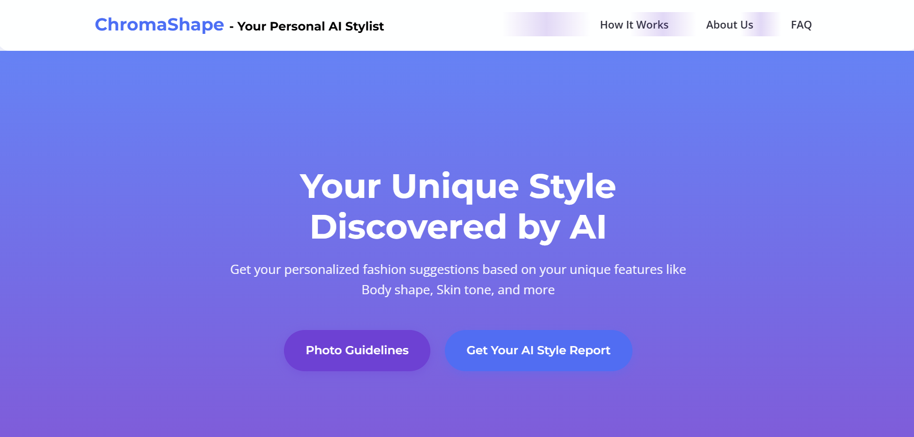
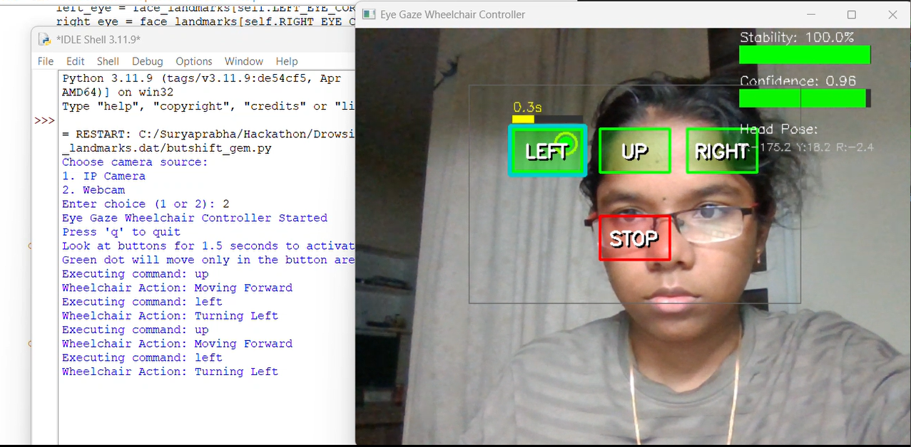
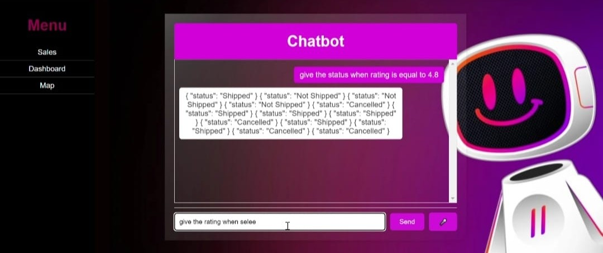
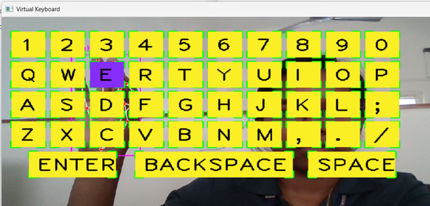
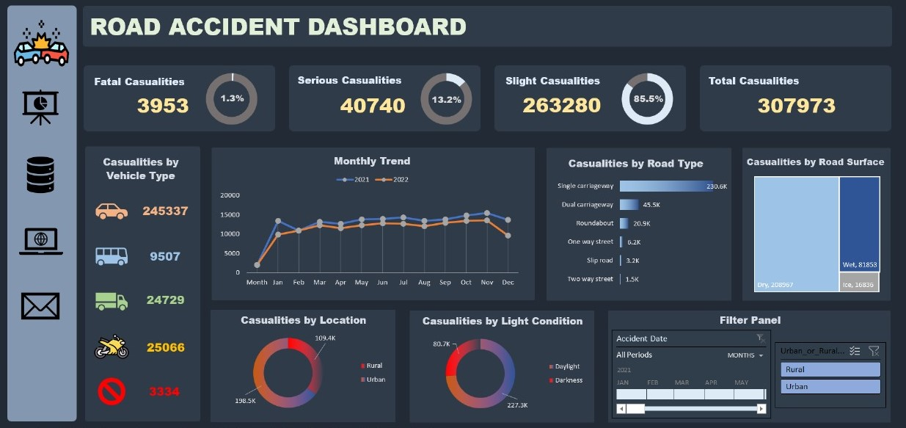
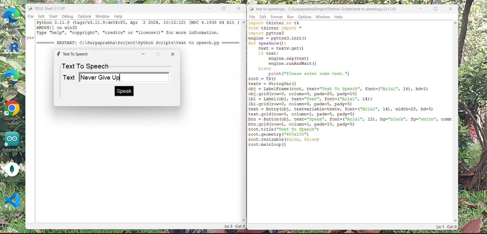
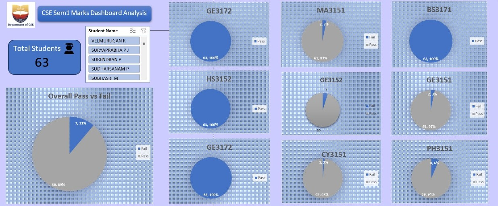

AI Personal Stylist
Personalized fashion suggestions based on features like body shape, skin tone, undertone, hair color, eye color, and torso ratio.
Tech Stack: OpenCV | MediaPipe | Flask | HTML | CSS | JavaScript

Eye Gaze Tracking
Eye-tracking system to aid mobility-impaired individuals in controlling wheelchairs and interfaces using gaze direction.
Tech Stack: OpenCV | MediaPipe | dlib | Blynk API | Arduino
Phishing Detection
AI-based phishing detection system that classifies malicious URLs using NLP and Random Forest models.
Tech Stack: Flask | HTML | CSS | JavaScript | scikit-learn | imblearn

Data Retrieval Chatbot
AI Chatbot that retrieves data from a database and convert natural language into precise data queries, providing interactive responses.
Tech Stack: Flask | API | SQLite | HTML | CSS | JavaScript

Hand Tracking Virtual Keyboard
Detects hand gestures for hands-free typing. The user interacts by pointing, the system detects the input text.
Tech Stack: OpenCV | MediaPipe | pynput

Road Safety Dashboard
Visualizes road accident and casualty statistics, providing detailed analysis across severity, time, and environmental factors.
Tech Stack: Excel

Text to Speech
A user-friendly interface to input text and clicks the "Speak" button to have the computer vocalize the input.
Tech Stack: Pyttsx3 | Tkinter

Student Mark Analysis Dashboard
Student performance dashboard that shows the pass/fail rates for individual subjects and provides an overall pass/fail percentage.
Tech Stack: Excel